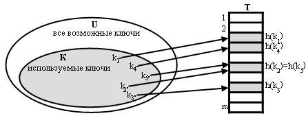
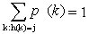
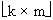
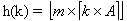
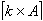
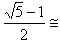
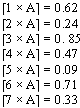
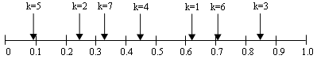
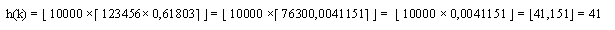
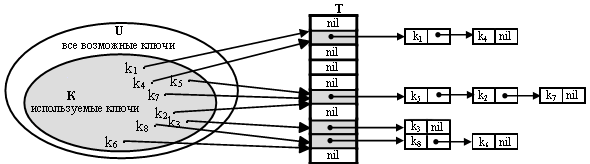

|
|
|||||||||||||||||||||||||||||||||||||||||||||||||||||||||||||||||||||||||||||||||||||||||||||||||||
|
|
|||||||||||||||||||||||||||||||||||||||||||||||||||||||||||||||||||||||||||||||||||||||||||||||||||
|
Хеш - таблица с цепочками коллизий Хеш - таблица с открытой адресацией Эффективность операций в хеш - таблице
Рассмотренные ранее коллекции на основе деревьев поиска позволяют строить абстрактный тип данных «Таблица», типичными операциями которой являются поиск, вставка и удаление элементов по ключу. Но эти коллекции обладают логарифмической трудоёмкостью операций, зависящей от числа элементов в таблице. Встречаются приложения, требующие быстрого и гарантированного по времени выполнения, не зависящего от объёма данных в таблице. В частности, это требование свойственно программным системам, работающим в реальном времени. В этом случае используется специальная организация таблицы с постоянным временем выполнения операций – хеш-таблица [1 - 4]. Прообразом хеш-таблицы является таблица с прямой индексацией по ключу, представляющая собой массив, каждая позиция которого соответствует отдельному значению ключа. В этом случае ключ используется как индекс массива и, тем самым, обеспечивается быстрый, прямой доступ к элементам таблицы. Прямая адресация обладает очевидным недостатком. Если множество U возможных ключей велико, то хранить в памяти массив Т размером │U│непрактично, а то и невозможно. Кроме того, если число реально присутствующих в таблице записей мало по сравнению с │U│, то много памяти тратится зря. Если количество записей в таблице существенно меньше, чем количество возможных ключей, то используется хеш-таблица. Хеш-таблица требует памяти О(│m│), где m – множество включенных в таблицу записей. Время поиска в хеш-таблице по-прежнему О(1). В хеш-таблице элементу отводится индекс h(k), где k – ключ элемента h(k) – хеш - функция. Число h(k) называют хеш-значением ключа k. Процесс преобразования ключа элемента в индекс хеш - таблицы называется хешированием. Для хеш-таблицы требуется массив размером m, а не │U│.  Функция хешированияХорошая хеш-функция должна обеспечивать равномерное хеширование, то есть для любого ключа все m хеш-значений должны быть равновероятны. Пусть на множестве ключей U зафиксировано распределение вероятностей Р. Предполагается, что ключи выбираются из U независимо друг от друга, и каждый ключ распределен в соответствии с Р. Тогда равномерное хеширование означает, что  , для j = 1, . . , m.Как
правило, распределение Р неизвестно, да
и выбор ключей из U также редко не
коррелирован. Если, все таки, Р
известно, например ключи – случайные
действительные числа, равномерно
распределенные на промежутке [0 . . 1], то
можно использовать хеш-функцию h(k) =  При выборе хеш-функций пользуются различными эвристиками, основанными на специфике задачи. Например, компилятор языка программирования хранит таблицу символов, в которой ключами являются идентификаторы программы. Часто в программе встречаются похожие идентификаторы (например, pt и pts). Хорошая хеш-функция будет стараться, чтобы хеш-значения у таких похожих идентификаторов были различны. Хеш-функцию стараются подобрать так, чтобы её поведение не коррелировало с различными закономерностями в хешируемых данных. Но на практике заранее неизвестно, какие именно значения ключей будут храниться в хеш-таблице. На всякий случай хеш-функцию разумно сделать “случайной”, обеспечивающей равномерное хеширование, т.е. для любого ключа все m хеш - значений должны быть равновероятны. Но случайная функция должна быть детерминированной в том смысле, что при повторных вызовах с одним и тем же ключом она должна возвращать одно и то же хеш-значение. Существует много способов создания функций хеширования, использующих преобразование произвольного натурального числа к натуральному индексу, лежащему в заданном диапазоне 0 .. m. Поэтому перед хешированием значения ключей приводятся к натуральному значению, если по своей природе они таковыми не являются. Например, последовательности ASCII-символов можно интерпретировать как целые числа, записанные в системе счисления с основанием 256. Вещественные числа можно привести к натуральному типу с некоторой заданной точностью, предварительно умножив на соответствующую степень 10. Метод деления с остатком (модульное хеширование) даёт простые и эффективные хеш-функции. Ключу k ставится в соответствие остаток от деления k на m. Хеш-функция вычисляется, как уравнение h(k) = k mod m. Например, если m=13, k=100, то h(k)=9. При этом некоторых значений m стоить избегать. Например, если m=2P, то h(k) – просто р младших разрядов ключа k. Если нет уверенности, что все комбинации р младших битов ключей равновероятны, то степень двойки в качестве m не выбирается. Не рекомендуется также m=10P, если ключи – десятичные числа. Тогда уже часть младших цифр полностью определяет хеш-значение. Плохо, если m – кратно 2, в этом случае h(k) четных k – четные, а нечетных k – нечетные. Плохо, если m кратно 3 для символьных и десятичных ключей, т. к. 10P/3 = 4P/3 =1, а 4P – основание символьных ключей. Можно поэкспериментировать с реальными данными для исследования того, насколько равномерно будут распределены их хеш-значения. Пример: плохого и хорошего значений m: М1=100, h1(k)=k mod 100 М2=101, h2(k)=k mod 101
Значения, дающие коллизии при любом М – числа, кратные m, m + 1, . . . , m + m-1. Метод хорошо работает, если в качестве m выбирать простые числа, близкие к степени двойки. Ниже приведены рекомендуемые размеры хеш-таблиц (числа Мерсенне) для модульного хеширования [4]:
Метод умножения (мультипликативный) [4] вычисляет хеш- функцию по формуле
 ,
где
A- некоторая константа, удовлетворяющая
условию 0 < A <1,  Достоинство метода умножения заключается в том, что качество хеш-функции мало зависит от выбора m. Но обычно в качестве m выбирают степень двойки, так как в большинстве компьютеров умножение на степень двойки реализуется быстро, как сдвиг слова. Метод умножения работает при любом выборе константы А, но некоторые значения А могут быть лучше других. Удачным значением является число – «золотое сечение» [7]: А
=  Если рассмотреть интервал, на котором лежат значения , то можно заметить, как ведут себя последовательные значения при k = 1, 2, 3 . . . и т.д. 
 Каждая последующая точка делит наибольший из интервалов золотым сечением. Соответственно ведет себя и хеш-функция на интервале [1 . . m]. Проиллюстрируем метод на конкретном примере. Пусть размер хеш - таблицы m = 10000. При вставке ключа 123456 получится хеш - значение: 
Можно использовать хеш- функции, учитывающие специфику ключей. Например для "длинных" ключей с большим количеством цифр можно использовать выбор отдельных цифр или свертку [ 2 ]. Хеш-функция, основанная на выборе цифр, формирует хеш-значение, как комбинацию отдельных цифр ключа. Например, для хеш-таблицы с размером m = 1000 из 12-значного ключа 12376945012310 можно выбрать первую, шестую и двенадцатую цифры и сформировать индекс 14310 или 34110 , если выбирать цифры в обратном порядке. Для уменьшения вероятности коллизий рекомендуется также учитывать номера позиций, из которых выбираются цифры. Для этого значение выбранной цифры можно складывать с номером позиции по модулю основания системы счисления. Например для ключа 7777777777710 с учетом номеров позиций цифр получается индекс 72710 , а для ключа 7777710 - 19710 . Запись цифр в позиционной десятичной системе и будет представлять хеш-значение, лежащее в диапазоне от 0 до 99910. Но такой способ хеширования оправдывает себя, если ключи элементов, вставляемых в таблицу, равномерно распределены на всём диапазоне значений. Метод свёртки группирует цифры ключа и складывает группы цифр по модулю m. Например, для m = 1000 ключ 12376945012310 можно преобразовать по схеме: (12310 + 76910 + 45010 + 12310 ) mod 1000 = 46510 .
Для уменьшения вероятности коллизий рекомендуется также учитывать номера групп, которые выбираются из ключа. Для этого значение цифр в выбранной группе можно складывать с номером группы по модулю основания системы счисления. Например, без учета номеров групп ключи 987123456 и 456987123 дадут одинаковое хеш - значение по методу свертки: (98710 + 12310 + 45610) mod 1000 = 56610 (45610 + 98710 + 12310) mod 1000 = 56610 Если с каждой цифрой сложит номер ее позиции по модулю 10, то получатся хеш - значения: (10910 + 23410 + 45610) mod 1000 =79910 (67810 + 09810 + 12310) mod 1000 = 89910
Можно применять свёртку, комбинированную с выбором цифр. Например, сначала выполняется простое суммирование групп цифр ключа, а из полученной суммы выбирается нужное количество цифр.
Если ключ является строкой символов произвольной длины, то можно применить преобразование строки к натуральному числу и затем применить к этому числу один из описанных выше методов. Но такой способ хеширования не всегда себя оправдывает. Существуют специальные методы хеширования строк. Например, если строки включают только заглавные буквы латинского алфавита, то каждой букве от A до Z можно поставить в соответствие числа от 1 до 26. Строка символов заменяется конкатенацией битовых образов этих чисел, соответствующих символам строки. К десятичному значению получившейся битовой последовательности можно применить любой из описанных выше методов хеширования [2]. Например строковый ключ "ALPHA" можно преобразовать этим способом в следующем виде: Буква А кодируется числом 1, или 00001 в двоичной системе. Буква L кодируется числом 12, или 01100 в двоичной системе. Буква P кодируется числом 16, или 10000 в двоичной системе. Буква H кодируется числом 8, или 01000 в двоичной системе. Конкатенируя двоичные величины, получаем двоичное число 0000101100100000100000001, которое равно 145843310. системе счисления. К этому числу можно применить один из описанных выше методов хеширования натуральных ключей. Правило Горнера Можно вычислить это же число, как число, записанное в позиционной системе счисления с основанием 25 = 32: 1324 + 12323 + 16322 + 8321 + 1320 = 145843310 Такие степенные полиномы эффективнее вычисляются с помощью схемы Горнера: (((132 + 12)32 + 16)32 +8)32 + 1 = 145843310
Хеш - таблица с цепочками коллизийПроблема хеш - таблицы заключается в том, что хеш-значения двух разных ключей могут совпадать. Такой случай называется коллизией или столкновением. Эта ситуация неизбежна, поскольку │U│ много больше m и существуют разные ключи, имеющие одно и то же значение h(k). При выборе хеш-функции заранее неизвестно, какие именно ключи будут храниться в хеш-таблице. На всякий случай хеш-функцию разумно сделать “случайной” в некотором смысле, хорошо перемешивающей ключи по ячейкам массива (to hash - мелко порубить, помешивая). Но случайная функция должна быть детерминированной в том смысле, что при повторных вызовах с одним и тем же ключом она должна возвращать одно и то же хеш-значение. Технология сцепления элементов состоит в том, что элементы множества с одним и тем же хеш-значением связываются в цепочку-список. В позиции j хранится указатель на голову списка тех элементов, у которых хеш-значение ключа равно j. Если таких элементов в таблице нет, то позиция j содержит nil. Такой способ разрешения коллизий позволяет хранить множества с потенциально бесконечным пространством ключей, снимая ограничения на размер множества. Поэтому этот способ организации хеш-таблицы называется открытым или внешним хешированием. Каждый элемент хранит указатель на голову списка или nil. 
Основная идея при открытом хешировании заключается в том, что потенциальное множество разбивается на конечное число подмножеств. Для m подмножеств, пронумерованных от 0 до m-1, строится хеш-функция h такая, что для любого элемента из исходного множества h(k) принимает целочисленное значение на интервале [0…m]. Значение хеш-функции определяет индекс в массиве указателей Т. Операции добавления, поиска и удаления реализуются легко : Chained_Hash_Insert (T, x) добавить x в голову списка T[h(key[x])]
Chained_Hash_Search (T, k) найти элемент всписке T[h((key[x]))]
Chained_Hash_Delete (T, x) найти и удалить х из списка T[h(key[x])] При анализе хеширования с цепочками учитывается фактор заполнения таблицы Т - α. Коэффициентом заполнения хеш - таблицы называется число α = n/m, где n – число занесенных в таблицу элементов, m – число элементов массива Т. α может быть и меньше и больше единицы. В худшем случае, когда хеш-значения всех ключей совпали, таблица сводится к одному списку длины n, и на поиск элемента будет тратиться время О(n), как в списке, плюс ещё время на вычисление хеш-функции. Средняя стоимость поиска зависит от того, насколько равномерно хеш-функция распределяет хеш-значения ключей по позициям таблицы. Если сделать предположение о равномерном хешировании, когда каждый элемент может попасть в любую позицию таблицы с равной вероятностью, то путем несложных доказательств можно сделать вывод, что время поиска элемента оценивается величиной O(1+ α). Если количество позиций в хеш-таблице m пропорционально числу n, т. е. n = O(m), то α = n/m = О(1) и О(1+ α) = O(1). Поскольку стоимость добавления и удаления в хеш-таблицу также равно О(1), то при оптимистических предположениях о распределении вероятностей стоимость любой операции равна O(1).
Хеш - таблица с открытой адресациейХеш-таблица с открытой адресацией представляет собой массив Т, в который помещаются элементы таблицы по индексу, равному хеш-значению ключа. При возникновении коллизии выполняется поиск другой ячейки массива (проба, зондирование ), в которой может разместиться элемент. Эта ячейка должна быть свободной (открытой). Для пометки состояния в ячейки таблицы вводится специальный признак состояния ячейки state. Ячейка хеш-таблицы может быть в одном из трех состояний: свободна (free), занята (busy), свободна после удаления из неё элемента (deleted). Открытой считается ячейка, находящаяся в состоянии free или deleted. При поиске свободной ячейки вычисляется и просматривается последовательность индексов ячеек массива. Последовательность зависит от ключа. k и номера пробы i. Для вычисления последовательности к хеш-функции добавляется второй аргумент - номер пробы (нумерация начинается с 0). Последовательность ячеек для некоторого ключа k имеет вид <h (k, 0), h (k, 1), .. , h (k, m-1)>. Функция h (k, i) должна быть такой, чтобы каждое из чисел 0, . . ,m-1 встречалось ровно один раз. Алгоритм вставки в таблицу с открытой адресацией:Hash_Insert (T, k, data)
Hash_Insert (T, k, data)
1.
2.
3.
4.
5.
6. i← 0 7. pos ← -1 8. repeat j ← h(k, i) 9. if state[T[j]] = deleted and pos = -1 10. then pos ← j 11. if state[T[j]] = busy and key[T[j]] = k 12. then return FALSE 13. i ← i+1 14. until i = m or state[T[j]] = free 15. if i = m and pos = -1 16. then return FALSE 17. if pos = -1 18. then pos ← j 19. key[T[pos]] ← k 20. data[T[pos]] ← data 21. state[T[pos]] ← busy 22. return TRUE
При поиске элемента с ключом k в таблице ячейки просматриваются в том же порядке, что и при вставке элемента с ключом k. Если встречается ячейка в состоянии free, то это значит, что искомого элемента в таблице нет. Алгоритм поиска в таблице с открытой адресацией:Hash_Search (T, k)
1.
2.
3.
4.
5. i← 0 6. repeat 7. j← h(k, i) 8. if key[T[j]] = k and state[T[j]] = busy 9. then return data[T[j]] 10. i← i + 1 11. until state[T[j]] = free or i = m 12. return "error"
Удаление элемента из таблицы с открытой адресацией не так просто. Если записать на его место nil, то в дальнейшем нельзя будет найти те элементы, в момент добавления которых это место вошло в число проб и было занято, и из-за этого была выбрана более удаленная позиция. Возможное решение – записывать на место удаленного элемента не nil, а специальное значение deleted ("удален"), и при добавлении рассматривать ячейку со значением deleted, как свободную. При поиске эту ячейку нужно рассматривать, как занятую. Недостаток этого подхода в том, что время поиска может оказаться большим даже при низком коэффициенте заполнения. Поэтому, если требуется удалять записи из хеш-таблицы, то предпочтение отдается хешированию с цепочками. Алгоритм удаления из таблицы с открытой адресацией:Hash_Delete (T, k)
1.
2.
3.
4. i← 0 5. repeat 6. j ← h(k, i) 7. if key[T[j]] = k and state[T[j]] = busy 8. then state[T[j]] ← deleted 9. return TRUE 10. i← i + 1 11.until state[T[j]] = free or i = m 12. return FALSE
На практике используются обычно три способа вычисления последовательности проб: линейный, квадратичный и двойное хеширование. В каждом из этих способов последовательность < h (k, 0), h (k, 1), …, h (k, m-1) > будет перестановкой множества {0, 1, …, m-1} при любом значении ключа k. Ни один из этих способов не является равномерным по той причине, что они дают не более m2 перестановок из m! возможных. Больше всего перестановок получается при двойном хешировании.
Разрешение коллизий в хеш-таблице с открытой адресациейОбычно используются три способа поиска свободных ячеек, называемых линейное зондирование, квадратичное зондирование и зондирование с двойным хешированием. При линейном зондировании хеш-функция при каждой попытке поиска вычисляет новую ячейку по формуле h (k, i) = (h(k) + i) mod m , где h(k) - обычная хеш-функция, i – номер пробы поиска свободной ячейки. При работе с ключом k первой выбирается ячейка T[h(k)], а затем перебираются ячейки таблицы подряд: T[h(k)+1], T[h(k)+2], . . . После ячейки T[m] следует ячейка T[1]. У метода очевидный недостаток: он может привести к образованию кластеров – длинных последовательностей занятых ячеек, идущих подряд. Это удлиняет поиск. В самом деле, если в таблице из m ячеек все ячейки с четными номерами заняты, а ячейки с нечетными номерами – свободны, то среднее число проб при поиске элемента, отсутствующего в таблице равно 1.5. Если же m/2 занятых ячеек идут подряд, то среднее число проб равно m/8=n/4 (n – число занятых мест в таблице) [3]. При квадратичном зондировании хеш-функция, задаёт квадратичную последовательность ячеек по формуле: h (k, i) = (h (k) + c i + c2 i2) mod m, где c1≠ 0 и c2 ≠ 0 – некоторые константы. Пробы начинаются с ячейки T[h(k)], но дальше ячейки просматриваются не подряд. Номер пробуемой ячейки квадратично зависит от номера пробы. Для того, чтобы использовались все ячейки таблицы, константы c1 и c2 нужно тщательно подбирать. Хорошую квадратичную последовательность проб даёт алгоритм, явно не использующий константы c1 и c2[3]. Алгоритм продемонстрирован на примере вставки элемента в хеш-таблицу.
Hash_Insert (T, k, data)1. i← 0 2. pos ← -1 3. j← h(k) 4. repeat 5. if state[T[j]] = deleted and pos = -1 6. then pos ← j 7. if key[T[j]] = k and state[T[j]] = busy 9. then return FALSE 10. i ← i+1 11. j← (j + i) mod m 12. until i = m or state[T[j]] = free 13. if i = m and pos = -1 14. then return FALSE 15. if pos = -1 16. then pos ← j 17. key[T[pos]] ← k 18. data[T[pos]] ← data 19. state[T[pos]] ← busy 20. return TRUE
При квадратичном зондировании тенденция к образованию кластеров частично устраняется. Хотя и остается эффект кластеризации в более мягкой форме – образование вторичных кластеров. Двойное хеширование – один из лучших методов открытой адресации. Последовательности индексов, возникающие при зондировании с двойным хешированием, близки к равномерному хешированию. При двойном хешировании хеш - функция имеет вид h (k, i) = (h(k) + ih1(k)) mod m, где h(k) и h1 (k) – обычные хеш-функции. То есть, последовательность проб при зондировании является арифметической прогрессией по модулю m с первым членом h(k) и шагом h1(k). Чтобы последовательность зондируемых ячеек охватывала всю таблицу, значение h1(k) должно быть взаимно простым с размером хеш-таблицы m. Простой способ добиться этого условия – выбрать в качестве m степень двойки, а функцию h1(k) взять такую, чтобы она принимала только нечетные значения. В другом варианте, если m – простое число, значения h1(k) - целые положительные числа, меньшие m. Например, если используется модульное хеширование, в котором размер хеш-таблицы выбирается, как простое число, то можно положить: h (k) = k mod m h1(k) = 1 + (k mod m1), , где m1 чуть меньше, чем m (m1= m-1 или m-2).
Эффективность операций в хеш - таблицеАлгоритмы чтения или модификации, вставки и удаления элементов зависят от структуры хеш-таблицы. Если используется хеш-таблица с цепочками коллизий, то алгоритмы поиска, вставки и удаления элемента действуют по однотипной схеме: · хеширование ключа элемента и вычисление индекса заголовка списка в массиве цепочек коллизий, · поиск в списке элемента с заданным ключом, · выполнение операции над элементом. Трудоёмкость операций зависит от средней длины списков, которую можно вычислить как α = n/m, где n – число занесенных в таблицу элементов, m – размер хеш-таблицы. С учётом первоначального хеширования ключа перед просмотром списка оценку трудоёмкости можно записать, как O(1+α/2) [2]. Величина α учитывает фактор заполнения таблицы и называется коэффициентом заполнения таблицы. Трудоёмкость операций в хеш-таблице зависит не от числа элементов n, содержащихся в ней, а от коэффициента заполнения α. Для хеш-таблиц с цепочками коллизий величина α может быть меньше и больше единицы. Зависимость трудоёмкости операций от заполнения справедлива и для хеш-таблиц с открытой адресацией. Чем более заполнена хеш-таблица, тем больше возникает коллизий и проб при зондировании. Приведённые в приложении 5 алгоритмы трёх основных операций для хеш-таблицы с открытой адресацией демонстрируют этот процесс. Так же, как при анализе хеширования с цепочками коллизий, трудоёмкость операций с открытой адресацией оценивается в терминах коэффициента заполнения α. Для открытой адресации α ≤ 1. Анализ трудоёмкости операций для хеш-таблиц с открытой адресацией более сложен, чем для хеш-таблиц с цепочками коллизий. Помимо коэффициента α трудоёмкость операции зависит от её алгоритма, метода зондирования, вероятности промахов операций. Поскольку в основе всех операций лежит определение наличия или отсутствия ключа в таблице, то трудоёмкость операций оценивается в количестве проб зондирования, выполненных при поиске ключа. Ниже приведены оценки трудоёмкости успешного или не успешного поиска ключа в зависимости от метода зондирования [6]:
Обход хеш-таблицы заключается в просмотре всех элементов, хранящихся в хеш-таблице для выполнения над ними некоторой операции. Для хеш-таблиц с цепочками коллизий обход сводится к просмотру всех непустых списков. Поэтому трудоёмкость обхода можно оценить, как сумму длин просмотренных списков, которая равна числу элементов в таблице. То есть, трудоёмкость обхода имеет оценку O(n). В хеш-таблице с открытой адресацией ведётся поиск всех занятых ячеек, хранящих данные. Трудоёмкость просмотра соответствует размеру хеш-таблицы и выражается оценкой O(m). |
|||||||||||||||||||||||||||||||||||||||||||||||||||||||||||||||||||||||||||||||||||||||||||||||||||
|
|